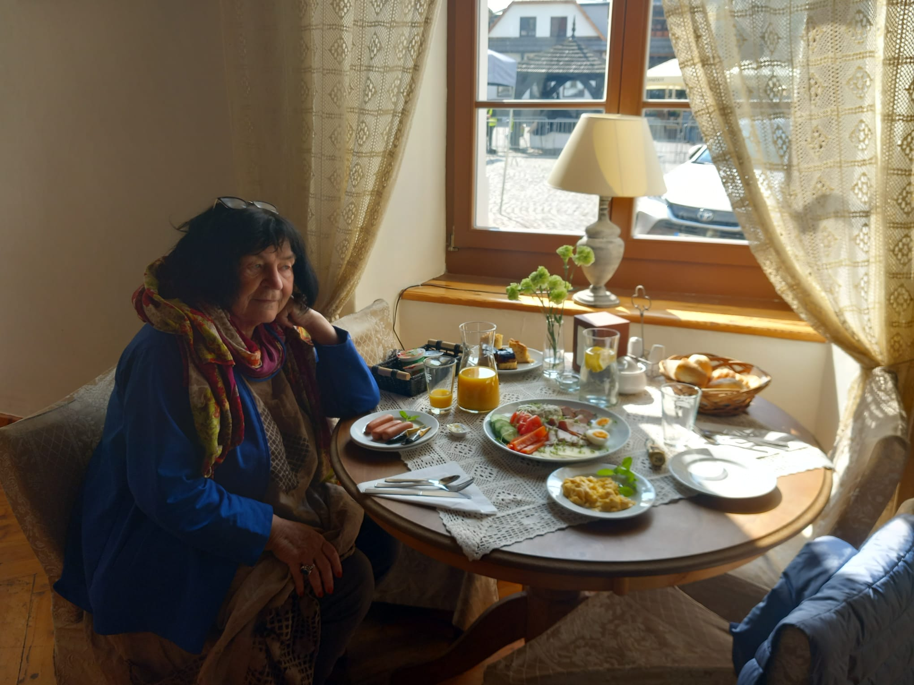
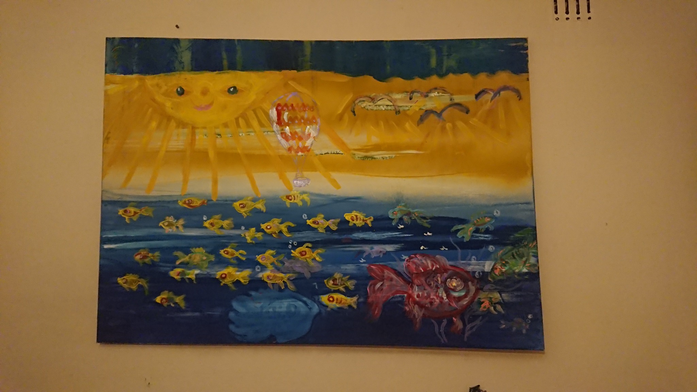

Sybilla zaczęła malować w wieku 50 lat, zainspirowana filmem
„Frieda”, opowiadającym o naiwnej malarce, która po wypadku
samochodowym zwróciła się ku malarstwu. Podobnie jak ona,
Sybilla również przeżyła śmierć kliniczną spowodowaną
zatruciem tlenkiem i poprzez arteterapię sama powróciła
do zdrowia.
W 2002 roku zapisała się na warsztaty malarskie i jeszcze
przed ukończeniem 50. roku życia namalowała swój pierwszy
obraz olejny. Jej przyjaciel Waldemar Raniszewski,
początkowo niedowierzający, a następnie zachwycony jej
talentem, powiedział: „będziesz wielką malarką naiwną”
i skierował ją na warsztaty malowania ikon w Sokołowsku.
Tam poznała Michała Boguckiego, a następnie Michała
Ogińskiego – współautora jej manifestu „Sybillanizm”:
„Sztuka powinna być optymistyczna i podnosząca na duchu”.
Michał Ogiński malował również anioły, które Sybilla
tak bardzo kocha.
Po powrocie do Warszawy w 2009 roku dołączyła do grupy
artystycznej prowadzonej przez Kingę Pawelską. W 2015 roku
została wybrana do udziału w Naive Art Festival w Katowicach,
w którym prezentowali się artyści z 52 krajów. W tym samym
roku otrzymała specjalną nagrodę za cykl
„Koty w czasach epidemii”.
Sybilla started painting at the age of 50, inspired by the
film “Frieda”, about a naive painter who turned to painting
after a traffic accident. Like her, Sybilla also suffered
clinical death caused by oxide poisoning and healed herself
through art therapy.
Enrolling in a painting workshop in 2002, she finished her
first oil painting before her 50th birthday. Her initially
incredulous and then amazed friend Waldemar Raniszewski
prophesied, “you will be a great naive painter”, and sent
her to an icon painting workshop in Sokołowsko, where she
met and learned from Michał Bogucki and then Michał Ogiński,
the co-signer of her “Sybillanism” manifesto:
“Art should be optimistic and uplifting”.
Michał Ogiński also painted the angels she loves so dearly.
Returning to Warsaw in 2009, she joined an artistic group
headed by Kinga Pawelska and in 2015 was chosen to participate
in the Naive Art Festival in Katowice, featuring artists from
52 countries. That same year she won a special award for her
series “Cats in the time of an epidemic”.

„Każdy obraz jest zaproszeniem do mojego świata.”

OBRAZ FLAGOWY
Świat pełen kolorów i wyobraźni
Jeden z najbardziej charakterystycznych obrazów Sybilli Golec.
Pogodne barwy, ryby, słońce i natura tworzą niezwykły świat,
w którym każdy detal opowiada własną historię.
GALERIA
Wybrane obrazy
Drzewo Szczęścia
W stylu Russo art native
Dwa koty nad jeziorem
Czarny Król z aniołkami
Anioł i dwa serca
Koty ze słonecznikiem
Kwiaty z kotkiem w stylu Matisse.
Galeria na Sienickiej.
Moja pierwsza ikona w stylu Nowosielskiego.
KONTAKT
Zapraszam do kontaktu
W sprawie obrazów, wystaw oraz współpracy
zapraszam do kontaktu.